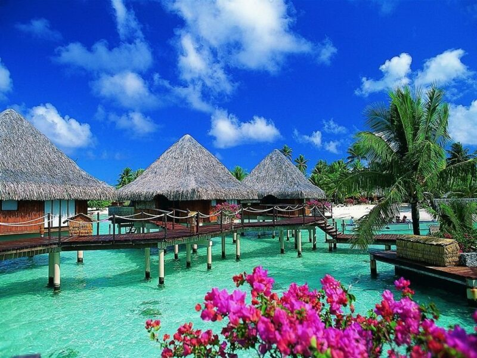
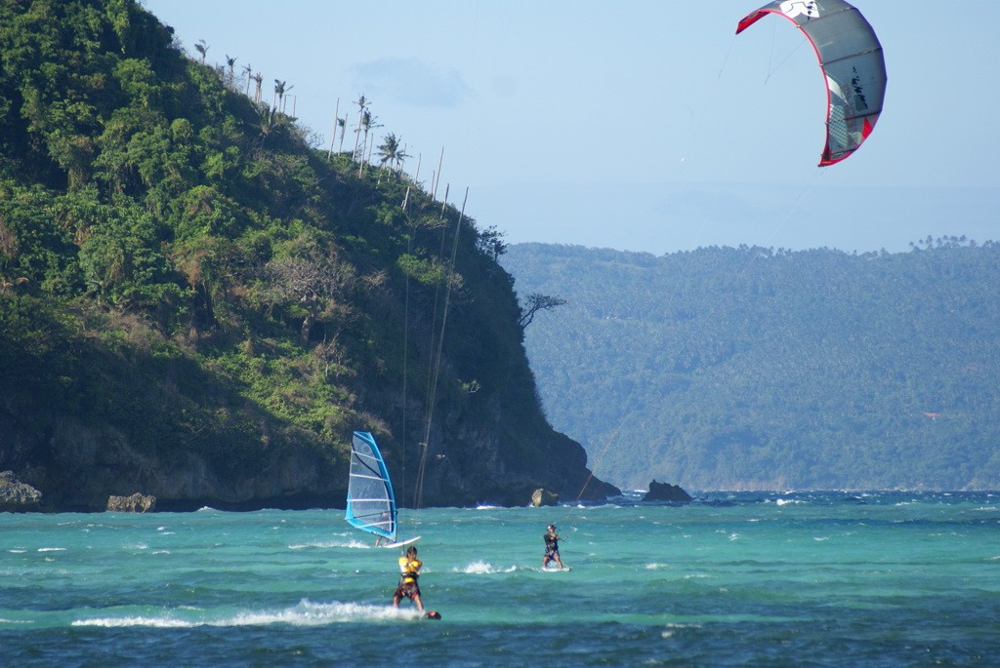
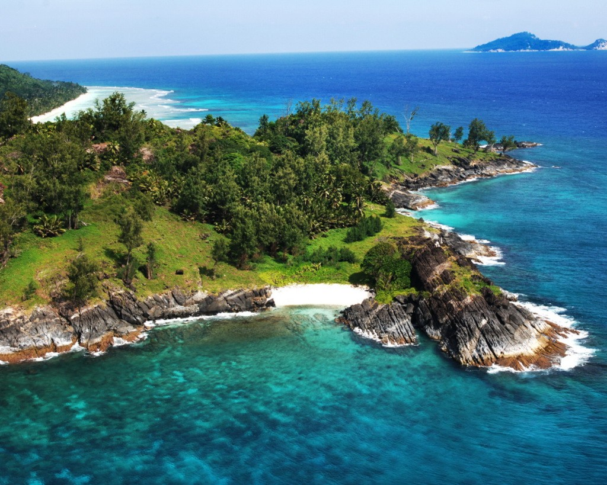
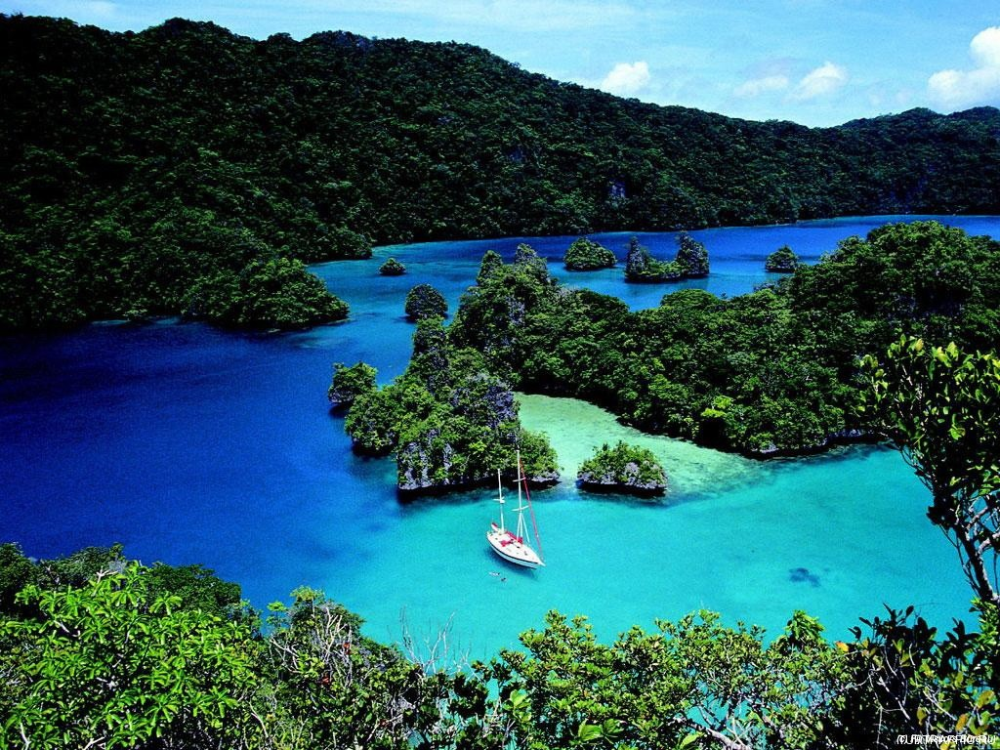
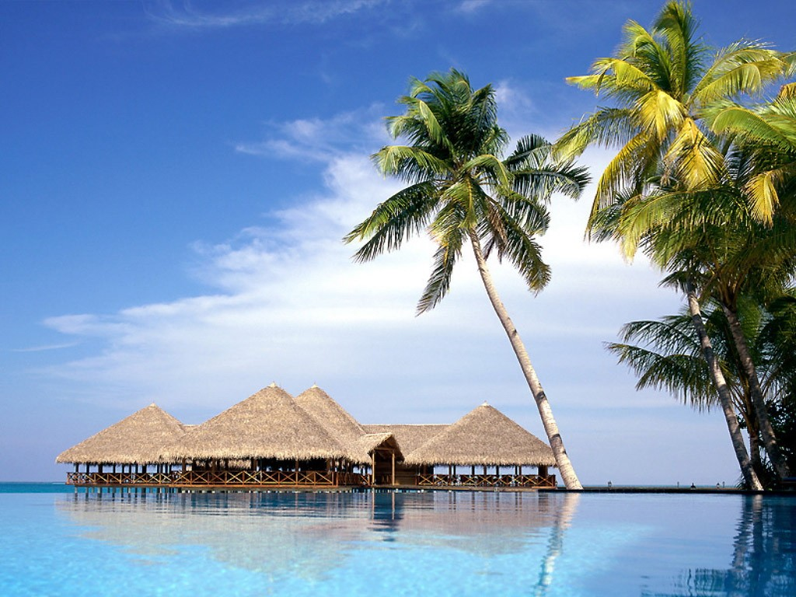
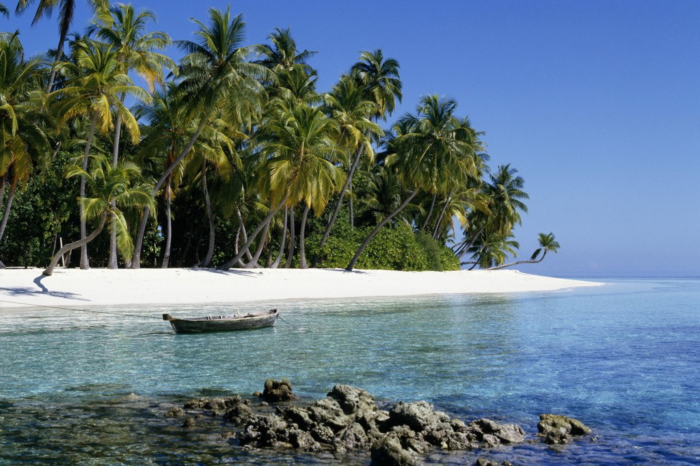
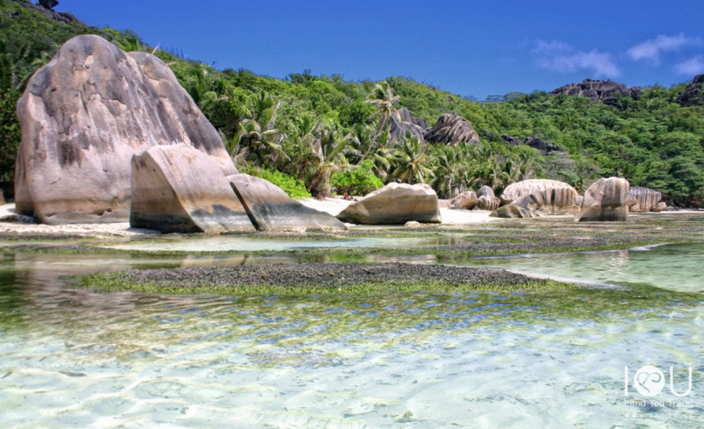
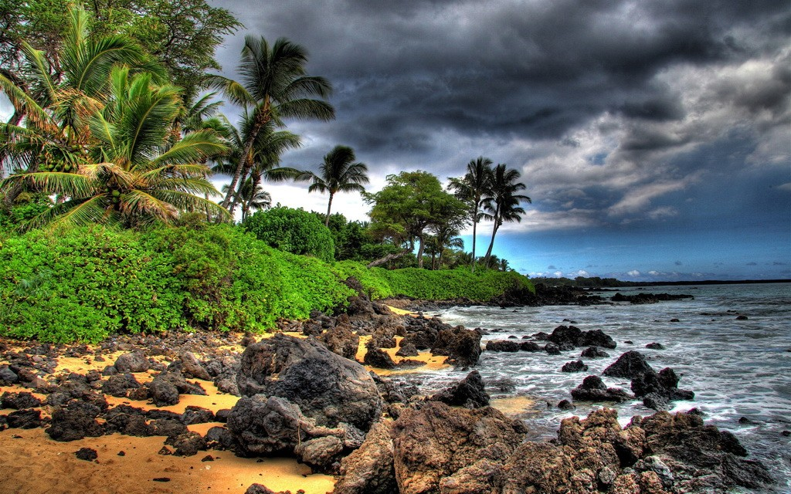

7 самых красивых островов мира
В мире много красивых мест, где можно отдохнуть и насладиться удивительной красотой природы. Особой популярностью у туристов всегда пользовались острова. Множество красивых островов можно встретить повсюду в любой части света, но ср Если ты читаешь эту надпись, значит кто-то взял эту статью с BigPicture.ru еди них можно постараться выделить наиболее красивые места. Это не значит что они чем-то лучше остальных, просто они быстро стали популярны у туристов благодаря своим условиям для комфортного отдыха и уединения от современной жизни.
Бора-Бора (Таити)
За веселым названием Боро-Боро скрывается привлекательное местечко рядом с Таити – остров Боро-Боро. Необычный остров славится удивительной круговой лагуной и насыщенным многообразием подводного мира. Бирюзовые лагуны, коралловые рифы, Если ты читаешь эту надпись, значит кто-то взял эту статью с BigPicture.ru большое количество разноцветных тропических рыб повсюду — делает Бора-Бора мечтой каждого дайвера. А как радует глаз присутствие романтических вилл с прекрасным дизайном и соломенными крышами, хорошо сочетающихся с природным окружением.
Боракай — Филиппины
Небольшой, вытянутый в длину остров Вашей мечты — 7 км райских пляжей – для истинных романтиков и любителей дайвинга. Боракай признан лучшим островным курортом мира по итогам голосования в сфере туризма «Звезда Travel.ru». Самые знаменитые пляжи Боракая — Белый пляж и Балабог. На острове вас ждут великолепнейший белоснежный песок , экзо Текст взят с сайта Новости в фотографиях - BigPicture.ru тическая природа, изумрудное море, свыше 12 дайвинг-центров, многообразие кораллов и тропическими рыб. Рекомендуем в Боракай отправиться всем, кто желает совместить дайвинг с пляжным отдыхом, а так же для любителей нескучных ночей: дискотеки, ночные бары, кафе, караоке — на острове есть все, что позволит провести ваш незабываемый отпуск!
Сейшельские острова
Сейшельские острова — мозаика из 115 островов у восточного побережья Африки. Острова расположены у Индийского океана, немного южнее экватора и несколько севернее Мадагаскара. На вопрос, где провести свой медовый месяц – « Мадагаскар-Тур» советует – не задумывайтесь и отправляйтесь на Сейшелы! Необычайный пальмовый лес, изумительные кораллы, гиг Источник статьи журнал Новости в фотографиях, у которого все копируют контент - BigPicture.ru антские черепахи и отличный пляж – все будет способствовать романтическому настроению и отличному времени провождению! И кстати, только здесь растет знаменитая сейшельская пальма, плод которой весит 20 кг и считается самым большим в растительном мире. Не зря местные жители верят в легенду, что именно этот плод и стал искушением для Адама и Евы….
Фиджи
Фиджи — 333 острова в южной части Тихого океана, 333 места для романтических свиданий и приключений, место, где начинаешь верить – рай на земле существует!Голубые лагуны и коралловые побережья, чистые Источник статьи журнал Новости в фотографиях, у которого все копируют контент - BigPicture.ru речки и холмы, покрытые лесами, необыкновенная природа – не зря сотни туристов из тысячи стран, влюбленные и семейные пары, выбирают именно это место для отдыха в самом красивейшем месте земного шара.
Мальдивы
Знаменитые острова, острова Вашей мечты, состоят из более чем 1190 коралловых островов. Как шутят местные жители, главные достопримечательности Мальдив расположены в недрах Индийского океана. Мальдивы — наилучшее место для занятий дайвингом. Лучше всего на Мальдивы отправляться тем, кто предпочитает спокойны Источник статьи журнал Новости в фотографиях, у которого все копируют контент - BigPicture.ru й отдых, ценит тишину и покой, устал от городской суеты и давно мечтал именно об этом — забыть о проблемах, делах, потеряться во времени, окунувшись в атмосферу гармонии и блаженства. С каждым годом поток туристов на Мальдивы растет, впрочем, как и количество комфортабельных отелей и школ для аквалангистов.
Занзибар
У восточного побережья Африки расположен целый архипелаг с названием, известным нам еще с детства из сказки Чуковского «Айболит». Занзибар — банановые пальмы, мангровые деревья, белоснежные пляжи, живописные картины коралловых рифов. Можно самому попробовать заняться дайвингом, а можно просто понаблюдать за работой местных Текст взят с сайта Новости в фотографиях - BigPicture.ru рыбаков.Главные преимущества курорта — богатое культурное наследие, чистейшие прибрежные воды и свыше 60 видов рыбок плавающих вокруг красочных коралловых рифов.Температура воздуха зимой не выше 35С, а летом – редко бывает ниже 26. Отдыхать здесь можно круглый год, за минусом апреля – в это время чаще всего характерны дожди.
Ко Липе, Таиланд
Маленький, но известный остров Ко Липе находится в Андаманском море, поблизости от Малайзии и Таиланда. Остров контрастов, настоящий рай для любителей экзотики и банановых пальм, Ко Липе всего два километра в длину, при ширине пляжа 700 метров. Курорт можно обойти весь вс Источник статьи журнал Новости в фотографиях, у которого все копируют контент - BigPicture.ru его за 2-3 часа. Проживание доступно, на территории острова есть, как небольшие бунгало, практически хижины, так и современные отели. Если Вы хотите понять, что испытывал Робинзон Крузо, когда очутился на необитаемом острове — запланируйте свой следующий отпуск в Ко Липе.
